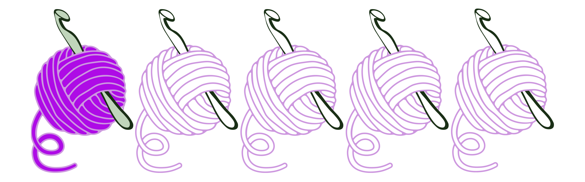

Virkkauksen ihmeelliseen maailmaan astellessani olen kuin virran vietävänä – tai
oikeastaan koukun vietävänä! Tämä uusi tuttavuus on napannut minut mukaansa, aivan kuin
virkkauskoukku tempaisisi langan mukanaan. Nyt, kun satunnaista aikaa löytyy, yritän opetella
tätä uutta taitoa. Mistä tämä innostus lähti, olen jo pitkään halunnut opetella joko neulomaan
tai virkkaamaan
. Kokeilin vuoden 2023 alussa neulontaa, mutta se päättyi lähinnä epätoivoiseen
rannelämmittimien yritykseen. Eipä niistä mitään tullut.
Vuoden lopulla päätin kuitenkin kokeilla jotain uutta, ja amigurumi astui kuvaan. Etsin
aloittelijaystävällisiä ohjeita YouTubesta, ja siellähän se oli: kilpikonnan ohje. Ehkä olisi
ollut parempi jättää se klikkaamatta, sillä nyt olen virkkauksen pauloissa!
Olen huomannut, että teen paljon ohjeiden mukaan ja saan aikaan ihan kivaa jälkeä, mutta tämä
virkkaustermistö on kuin kiinalainen sokkelo minulle. Puhutaan pisteistä, ja olen ihan kuin
"mikä"? Mutta kun näen, niin sanon: "Ai, se on tuo! Olisit heti sanonut!" Nyt vain
virkkauskoukku heilumaan ja lankoja liikkeelle – katsotaan, mikä seuraavaksi putoaa koukulta!
Tervetuloa siis tutustumaan käsityöprojekteihini ja niiden mahdollisiin ohjeisiin! Olen koonnut
tälle
sivulle kaikki tekemäni työt, jotta voit helposti löytää inspiraatiota ja ideoita omiin
projekteihisi.
Jokaiseen työhön olen myös antanut oman arvioni vaikeustasosta, jotta tiedät, minkälaisen
haasteen
valitset aloittaessasi uuden projektin. Olipa kyseessä sitten yksinkertainen virkkaustyö yhdellä
värillisellä lankakerällä tai vaativa koukkuprojekti viidellä värillisellä lankakerällä, toivon,
että löydät pian itsesi koukuttuneena tähän ihanaan harrastukseen!

Kilppari

Ensimmäinen amigurumini oli tämä suloinen kilpikonna, ja sen tekeminen
vei minut täysin mukanaan. Siitä lähtien olen virkannut jo viisi näitä ihanuuksia! Jos
kaipaat uutta harrastusta tai haluat kokeilla käsityötä ensimmäistä kertaa, suosittelen
lämpimästi amigurumin tekemistä. Se on hauskaa ja palkitsevaa puuhaa, ja lopputulos on
aina niin suloisen näköinen.
Alla on lista tarvikkeista, joita itse käytin kilpikonnan tekemiseen, mutta voit
tietysti valita omat värisi ja koukkukokosi sen mukaan, mikä sinulle parhaiten sopii.
Klikkaamalla valokuvaa löydät opasvideon jonka meille tarjoa The Mary Jay -
video englanniksi
| Tarvikkeet: |
|
| 2 kpl turvasilmiä |
Alize Velluto baby sininen, 1 kerä |
| 5.5 mm virkkuukoukku |
Alize Velluto hattara, 1 kerä |
| Parsinneula |
Vanua |

Norsu
Seuraavaksi päätin haastaa itseni ja virkata tämän ihanan norsun. Tämän
pehmokaverin erikoisuutena ovat pyöritettävät kädet ja jalat, mikä tekee siitä
entistäkin hauskemman ja monipuolisemman leikkikumppanin. Mutta kuten jokainen
käsityöharrastaja varmasti tietää, matkan varrella saattaa tulla vastaan odottamattomia
haasteita.
Norsua tehdessäni kohtasin jokaisen virkkaajan kauhun: sininen lanka loppui kesken, eikä
sitä löytynyt lähikaupasta eikä edes ihan jokaisesta kaupasta. Onneksi kuitenkin eräästä
kaupasta löytyi tarvittava lankaa, joten sain tämän sympaattisen hurmurin vihdoin
valmiiksi.
Klikkaamalla valokuvaa löydät opasvideon jonka meille tarjoa Rose and Lily
Crochet - video
englanniksi ja kaksi osainen
| Tarvikkeet: |
|
| 5.5 mm virkkuukoukku |
Alize Velluto baby sininen, 2 kerää |
| Parsinneula |
Alize Velluto luonnonvalkoinen, 1 kerä |
| Vanua |
|

Saukko
Kolmas söpö kaverini syntyi odotellessani norsun lankoja saapuviksi.
Sattumoisin ystäväni tyttärellä oli syntymäpäivät tulossa, joten päätin virkata
hänelle pienen lahjan. Koska minulla ei ollut kotona turvasilmiä, keksin luovasti
käyttää mustia helmiä kaverin silmiksi. Tämä pieni yksityiskohta teki hahmosta
vieläkin persoonallisemman ja ainutlaatuisemman.
Klikkaamalla valokuvaa löydät instagram oppaan jonka meille tarjoa viicrochet
-
opas englanniksi
| Tarvikkeet: |
|
| 2 kpl turvasilmiä |
Alize Velluto baby hattara, 1 kerä |
| Turvanenä |
Alize Velluto luonnonvalkoinen 1 kerä |
| 5.5 mm virkkuukoukku |
Vanua |
| Parsinneula |
|

Villasukka
Seuraavana projektina minulla oli villasukat virkkaamalla.
Ensimmäinen yritys ei sujunut kovin hyvin, ja päätin jättää sen ilman paria.
Onneksi toinen sukka valmistui jo paljon paremmin, mutta nyt minun pitäisi vain
tehdä sille pariksi toinen sukka. Jotenkin villasukkien virkkaaminen ei vain tunnu
olevan minun juttuni – ei ole ollut aikaisemminkaan, eikä näköjään vieläkään.
Mutta ainakin olen oppinut matkan varrella ja päässyt hieman paremmaksi
virkkaajaksi.
Klikkaamalla valokuvaa löydät opasvideon jonka meille tarjoa The Snugglery -
video
englanniksi ja kaksi osainen
| Tarvikkeet: |
|
| 5.5 mm virkkuukoukku |
7 Veljestä raita, 2 kerää |
| Parsinneula |
|